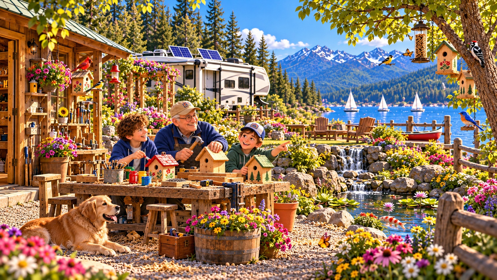

Explore Adventures ▾
Main Adventures
Community Edition
Travel Edition
Sports Edition
Space Edition
Family & Special
‹
›
← Return Panel

↕ Move
A−
A+
Reset
↘
BIRD SANCTUARY
Click & Discover
You found something at the train station.
el tablero de salidas
Departure board
🔊 Hear It
Next →
CHALLENGE 1 OF 6
Find the correct object to unlock the next challenge.
Next phrase →